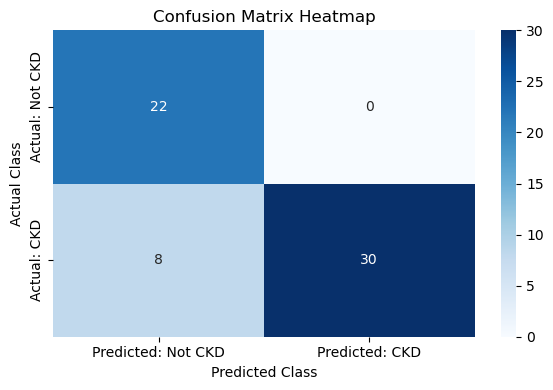

Chronic Kidney Disease Prediction
Identified the leading contributing factors of chronic kidney disease using machine learning models.
More details
Problem
About 14% of U.S. adults are affected by Chronic Kidney Disease (CKD). That makes up 35.5 million people. Despite the high number, approximately 90% of the people with CKD are not aware they have it. We aim to find which measurable health variables are linked closest to the disease in order to increase early detection and prevention.
Approach
The variables we use in our regression model are blood pressure, red blood cells, pus cells, pus cell clumps, bacteria, hypertension, diabetes melitus, coronary artery disease, appetite, pedal edema, and anemia. These were the measured health factors given in the dataset and all are good to use as potential predictors. We will predict the class which tells us if they have CKD or not. To build the KNN model, we first split our data into training and testing sets. Then, because this is a KNN model, we used StandardScaler() to ensure distance calculations were calculated correctly. We used GridSearchCV with a 5-fold cross validation to pick the most accurate number of neighbors to use and the most accurate weight distribution of the neighbors to use. Lastly, we evaluated the model to ensure our results made sense and have us useful information.
Results & Impact
We found that the regression model can accurately predict CKD from the factors provided 86.67% of the time. The KNN model achieved an accuracy of 95%, meaning it correctly predicted CKD or non-CKD for 38 out of 40 patients. For this we had two false negatives. The results of the forward selection were printed and we found that red blood cell, pus cell clumps, hypertension, diabetes melitus, and appetite were the least amount of predictors that produced the highest model accuracy.